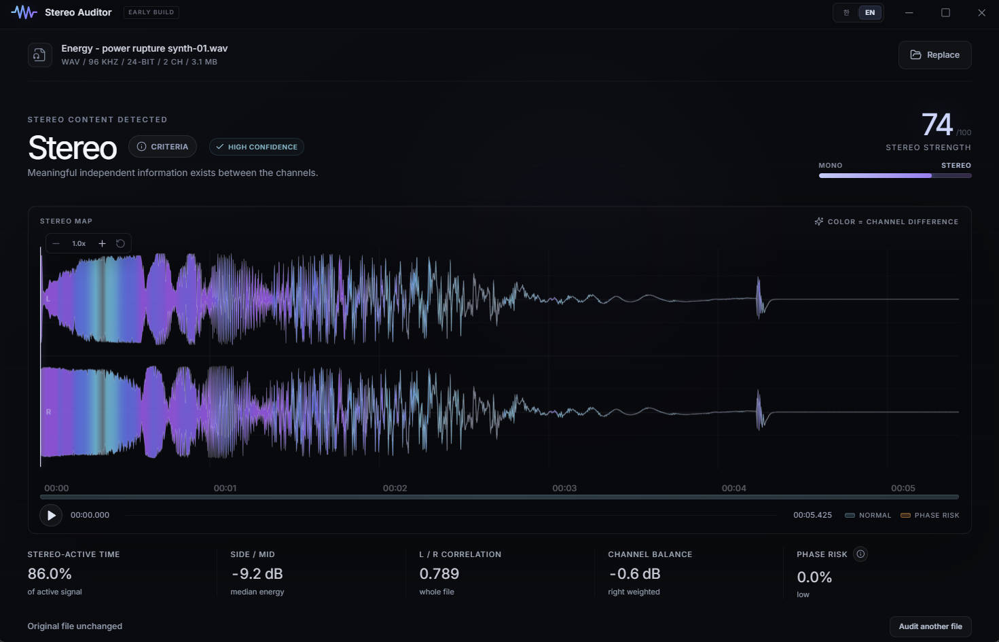

스테레오의 성분을
눈으로 확인합니다
오디오 파일 하나를 드롭하면 채널 관계를 판정하고, 고해상도 L/R 웨이브폼 위에 구간별 스테레오 강도를 색으로 표시합니다. 지속되는 위상 위험 구간도 함께 보이며, 원본 파일은 끝까지 변경되지 않습니다.
세션 구성이나 라우팅, 업로드 없이 파일 하나를 빠르게 검수하는 단일 목적 데스크톱 유틸리티입니다. 분석은 전부 이 컴퓨터 안에서 끝납니다.
v1.0.2 · Windows x64 · 설치본 3.8MB

드롭하고, 판정하고, 필요한 곳만 확대
세 단계로 끝납니다. 파일을 드롭하고, 판정을 읽고, 궁금한 구간만 재생하며 확대합니다.
오디오 파일 드롭
시작 화면에 드롭하거나, 현재 웨이브폼 영역에 새 파일을 바로 드롭합니다.
채널 판정 확인
분류, 스테레오 강도, 활성 시간, Side/Mid, 상관도, 채널 밸런스를 확인합니다.
재생하며 확대
파형을 탐색·재생·확대·이동하며 확인합니다. 원본 파일은 끝까지 변경되지 않습니다.
한눈에 보는 기능
이 툴이 하는 일 아홉 가지입니다. 각각은 아래에서 더 자세히 풀어 두었습니다.
L/R 웨이브폼
좌우 채널을 합치지 않고 실제 진폭 엔벌로프로 분리해 보여줍니다.
색으로 읽는 강도
모노에 가까운 구간은 절제된 회청색, 독립적인 스테레오 정보가 강해질수록 청록에서 보라로 갑니다.
채널 관계 판정
2채널이라는 이유만으로 스테레오라고 부르지 않습니다. 복제, 미세한 차이, 레벨 차이뿐인 패닝, 진짜 공간 정보를 구분합니다.
32배 확대
고해상도 엔벌로프와 판정 데이터를 분리해, 재생 반응성을 유지하면서 세부 피크를 보여줍니다.
확대해도 실제 파형
전체 보기에서는 가볍게 축약하고, 확대할 때는 저해상도 이미지를 늘리는 대신 보존된 파형 데이터를 씁니다.
지속 위상 위험
저레벨 꼬리와 100ms 미만의 순간 신호는 제외하고, 정상 구간 위에 지속 위험만 주황색으로 표시합니다.
구간 수치 확인
구간에 마우스를 올려 시간, 스테레오 강도, Side/Mid, L/R 상관도와 판정 이유를 확인합니다.
원본 그대로
원본에 아무것도 쓰지 않습니다. 드롭한 파일이 그대로 남습니다.
일곱 가지 입력
WAV · AIFF · FLAC · MP3 · M4A · AAC · OGG.
파일 구조가 아니라
채널 관계를 판정
2채널 파일은 진짜 스테레오 녹음일 수도, 바이트가 똑같은 복제일 수도, 레벨만 다르게 패닝한 모노일 수도 있습니다. 서로 다른 문제이므로 판정도 다르게 나옵니다.
파형은 실제 오디오답게, 정보는 색으로
파형은 오디오로 읽히게 두고 판정은 색이 나릅니다. 그래서 파일 전체를 한 번 훑는 것만으로 스테레오가 어디에 있는지 보입니다.

위상 트랙이 화면을 따라온다
위상 트랙도 보이는 시간 범위를 따라가며 정상 구간과 지속 위험 구간을 구분합니다.